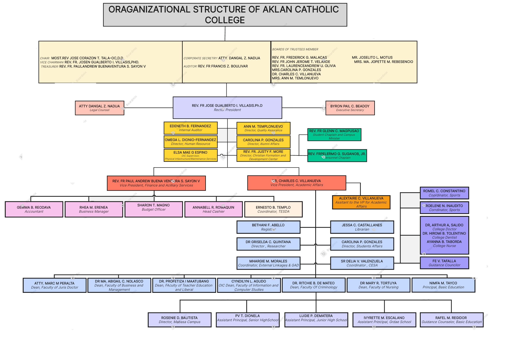

Aklan Catholic College (ACC) stands as a premier Catholic educational institution in Kalibo, Aklan, known for its commitment to academic excellence and spiritual development. Founded in 1945, it holds the distinction of being the first higher education institution in the province of Aklan.
Originally established as Aklan College, the institution was founded under the leadership of the late Bishop Jose Ma. Cuenco of the Archdiocese of Jaro. The goal was to provide quality education grounded in Catholic values to the youth of Aklan, especially in the aftermath of World War II.
In 1947, the school received its first government recognition, a significant milestone that paved the way for its expansion and development.
During the 1960s, Aklan College was renamed Aklan Catholic College, reflecting its strong Catholic identity and mission to offer faith-based education. The transformation was supported by the local Catholic community and prominent figures like Jaime Cardinal Sin, who played a crucial role in strengthening the institution's financial and academic foundations.
ACC has consistently been a trailblazer in education in the province of Aklan, achieving several firsts:
ACC is deeply rooted in the community and actively participates in cultural and spiritual events. The annual Foundation Day Celebration is a highlight, featuring:
The institution's mission is encapsulated in its motto: “Pro Deo et Patria” (For God and Country). Aklan Catholic College is dedicated to nurturing students who exemplify its core values:
Today, Aklan Catholic College continues to be a pillar of education in Aklan, shaping future leaders who are committed to making a positive impact on society through faith, knowledge, and service.
